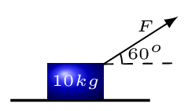
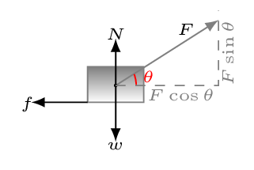

Example 4.6.1.
A 10-kg block lying on the horizontal surface is pulled by a force F making an angle of \(60^{o}\) above the horizontal. The coefficient of static friction between the block and the horizontal surface is 0.3 and the coefficient of kinetic friction is 0.2. Draw the appropriate diagrams, write the appropriate equations, and find the magnitude and direction of the acceleration of the block when

- \(\displaystyle F = 30 \,N,\)
- \(\displaystyle F = 60 \,N,\)
- \(\displaystyle F = 90 \,N,\)
- \(\displaystyle F = 120 \,N.\)
Solution.
Given: \(m = 10 \,kg, \quad \theta = 60^{o}, \quad \mu_{s} = 0.3, \quad \mu_{k} = 0.2, \quad g = 9.8 \,m/s^{2}.\)

Equations:
\begin{equation*}
\sum F_{x} = F \cos\theta - f = m a_{x}
\end{equation*}
\begin{equation*}
\sum F_{y} = F \sin\theta - w + N = m a_{y}
\end{equation*}
\begin{equation*}
f = \mu N;
\end{equation*}
\begin{equation*}
w = m g \quad \rightarrow \quad w = 98\, N
\end{equation*}
- \(F = 30 \,N.\) In verticle direction, \(a_{y} = 0,\)\begin{equation*} \therefore \quad N + F \sin\theta -w = 72.02 \,N \end{equation*}In horizontal direction, assume \(a_x=0\) then,\begin{equation*} f= F\cos\theta = 30\times \cos(60) =15\,N. \end{equation*}and\begin{equation*} f_s=\mu_s N = 0.3\times 72.02 = 21.61\, N \end{equation*}Since \(f \lt f_{s},\) static friction can keep the block at rest as assumed. Therefore, \(a = 0, \quad \theta_{a} = 0.\)
- \(F = 60 \,N.\) Assume\begin{equation*} a_{y} = 0, \longrightarrow N = w - F \sin\theta = 46.04 \,N \end{equation*}and\begin{equation*} a_{x} = 0,\longrightarrow f = F \cos\theta = 30 \,N, \quad f_{s} = \mu_{s} N = 13.812 \,N \end{equation*}Since \(f \gt f_{s},\) static friction cannot keep the block at rest as assumed. Therefore block slides and,\begin{equation*} \mu =\mu_{k} = 0.2;\quad f = \mu N = 9.208 \,N \end{equation*}\begin{equation*} a_{x} = (F \cos\theta - f)/m = 2.079 \,m/s^{2} \end{equation*}\begin{equation*} \therefore a = 2.08 \,m/s^{2}, \quad \theta_{a} = 0. \end{equation*}
- \(F = 90 N.\) Assume\begin{equation*} a_{y} = 0, \rightarrow N = w - F \sin\theta = 20.058 \,N \end{equation*}Assume block slides,\begin{equation*} \mu = \mu_{s} = 0.2;\quad f = \mu N = 4.099 \, N \end{equation*}\begin{equation*} a_{x} = (F \cos\theta - f)/m = 4.011 \,m/s^{2}\qquad \therefore a = 4.01 \,m/s^{2},\quad \theta_{a} = 0. \end{equation*}
- \(F = 120 \,N.\) Assume\begin{equation*} a_{y} = 0, \rightarrow N = w - F \sin\theta = - 5.923 \,N \end{equation*}Since N cannot be negative, our assumption was false and block leaves the surface.\begin{equation*} \therefore, N = 0, \quad f = 0;\quad a_{x} = (F \cos\theta)/m = 6.000 \,m/s^{2} \end{equation*}\begin{equation*} a_{y} = (F \sin\theta - w)/m = 0.5923 \,m/s^{2} ; a = = 6.029 \,m/s^{2} \end{equation*}\begin{equation*} \tan\theta_{a} = \frac{a_{y}}{a_{x}} \rightarrow \theta_{a} = 5.638^{o} \end{equation*}\begin{equation*} \therefore, a = 6.03 \,m/s^{2}, \quad \theta_{a} = 5.64^{o}. \end{equation*}